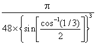
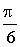

Snow crystal,
from SnowCrystals.com
Natural snow and ice on Earth occur as hexagonal ice (ice Ih), as evidenced in the six-fold symmetry in ice crystals grown from water vapor (that is, snowflakes).
 Some physical properties of ice
Some physical properties of ice
'snow flowers have six points'
'Why do snowflakes always fall as flat structures with six corners?'
asked by Johannes Kepler, (1611) The six-cornered snowflake
'Every crystal was a masterpiece of design and no one design was ever repeated'
Snowflakes described by W. A. Bentley. 1925
Glacier iceberg

There are four different naturally occurring morphological forms of hexagonal ice; snow, firn (multi-year snow), freshwater ice, and sea ice [3584]. Hexagonal ice ([1969], ice Ih i see Phase Diagram), is in Space group P63/mmc, k 194; symmetry D6h, Laue class symmetry 6/mmm; analogous to β-tridymite silica or lonsdaleite. It possesses a relatively open low-density structure, where the packing efficiency is low (≈ 1/3) compared with simple cubic (≈ 1/2) or face-centered cubic (≈ 3/4) structures a (and in contrast to face-centered cubic close-packed solid hydrogen sulfide).
The crystals may be thought of as mirror images of corrugated oxygen sheets lying on top of each other. The basic structure consists of a hexameric box where planes consist of chair-form hexamers (the two horizontal planes, opposite) or boat-form hexamers (the three vertical planes, opposite). In contrast, cubic ice contains solely chair-form hexamers. In this diagram, the hydrogen bonding is shown ordered whereas, in reality, it is random, b as protons can move between (ice) water molecules at temperatures above about 5 K [1504]. Indeed, it is likely that the protons in ice behave like a quantum liquid in a constant tunneling flux [2301]. This idea is reinforced by neutron scattering experiments showing a proton scattering density midway between oxygen atoms [1969], indicating proton delocalization and concerted proton movement.
The water molecules have a staggered hydrogen bonding concerning three of their neighbors in the plane of the chair-form hexamers. The fourth neighbor (shown as vertical links opposite) has an eclipsed arrangement of hydrogen bonding.
Hexagonal ice lattice
There is a slight deviation from ideal hexagonal symmetry. The unit cell c is 0.3 % shorter in the c-direction (in the direction of the eclipsed hydrogen-bonding, shown as vertical links in the figures). This gives rise to reduced compressibility in the c-direction [3152]. The unit cell may be considered as a group of four molecules (three shown starred in the above-right figure, with the fourth linked as indicated). The crystallographic c-axis is in the vertical direction (see right). The hexagonal crystal has unit cell dimensions 4.5181 Å (a) (the lateral lattice spacing) and 7.3560 Å (c) (90º, 90º, 120º, four molecules, at 250 K) [382] (the interlayer spacing is half this = 3.6780 Å); with average nearest O···O distance = 2.76 Å, with H···O and O-H bond distances of 1.75 Å and 1.01 Å respectively. In a perfect crystal, the 'c' cell parameter would be 2√(2/3) times the 'a' cell parameter (7.3780 Å). The cell dimensions for D2O are 4.5216 Å (a) and 7.3627 Å (c) [382], with its c-axis very slightly less affected. There appears to be a slight variation in the c/a axial ratios of D2O ice Ih below 160 K consequent on the partial ordering of the hydrogen bonds (see ice XI) that depends upon both the preparation method and the thermal history of the sample [3596].
All molecules experience identical molecular environments. There is enough space inside each box to hold an interstitial water molecule. Although this is generally not thought to occur, interstitial water molecules have been found by neutron diffraction of effectively powdered ice [154]. Modeling in 2015, found that the O···O–H angle in ice, which would be 0° for a linear hydrogen bond, is more disordered in ice than in the liquid [4016].
Hexagonal ice has triple points with liquid and gaseous water (0.01 °C, 612 Pa), liquid water and ice-three (-21.985 °C, 209.9 MPa), ice-eleven and ice-two (-199.8 °C, 70 MPa), and ice-two and ice-three (-34.7 °C, 212.9 MPa). The dielectric constant of hexagonal ice is 97.5 [94].
The melting curve for hexagonal ice is given by MPa [1320] g. The IAPWS release on the equation of state for hexagonal ice is available. Some simple equations relating the variation of the physical properties with the temperature of hexagonal ice and its aqueous slurries are available [1665]. h The experimental elastic constants of ice Ih have been compared with semi-empirical water models [3585] and density functional theory [3897]. The hardness of ice varies with the temperature, increasing from about or below that of gypsum (≤2 on Mohs scale) at 0 °C to about that of feldspar (6 on Mohs scale) at -80 °C [2097], an anomalously large change in absolute hardness (>24 times) with temperature.
Ice crystal structure showing three crystal planes
The prism face water molecules extend slightly further (0.39 nm) than the basal plane water molecules (0.37 nm) [3385]
Hexagonal ice crystal showing
the main crystal faces
ice crystals giving miller indices
(x,y,z) of faces; from [2304]
![ice crystals giving miller indices (x,y,z) of faces; from [2304]](images/ice-miller.gif "ice crystals giving miller indices (x,y,z) of faces; from [2304]")
Hexagonal ice crystals form hexagonal plates and columns where the top and bottom faces are basal planes {0001} with enthalpy 5.57 �J ˣ cm−2 [3019], and the six equivalent side faces are called the (primary) prism faces {1010}di with enthalpy 5.94 �J ˣ cm−2 [3019]. Secondary prism faces {1120} dii with enthalpy 6.90 �J ˣ cm−2 [3019] may be formed down the planes formed by the sides of the chair structures.
Hexagonal ice shows an anomalous reduction in thermal conductivity with increasing pressure (as do cubic ice and low-density amorphous ice) but is different from most crystals. This is due to changes in the hydrogen bonding decreasing the transverse sound velocity [617]. The experimental 2D IR spectra of D2O isotopically pure ice Ih, ice II, ice V, and ice XIII have been compared [3121].
The hydrogen bonding in the surface of hexagonal ice is predicted to be more ordered than that within the bulk structure [1529]. The X-ray absorption spectra determined for preparations of hexagonal ice, although qualitatively similar, give differences in the values of pre-edge, main-edge, and post-edge intensities and their relative ratios. This may be due to different preparation procedures giving possible contamination by cubic ice or low-density amorphous (LDA) ice [3558]. Methods have been published describing how to prepare large ice crystal samples and any desired face of ice [3019].
Phase-resolved sum-frequency-generation vibrational spectroscopy has shown a structural asymmetry between the top two layers (L1 top layer of water hexagons, L2 second layer of water hexagons) in the subsurface hydrogen-bonding of the basal face of hexagonal ice. Accepted hydrogen bonds in the top surface hexagons (L1 O···H-O L2) are stronger than the accepted hydrogen bonds in the second layer hexagons to the top layer (L1 O-H···O L2) [3100].
The electric properties of ice (e.g., electrical conductivity) have been explained using the two types of free-moving defects in ice; the presence of ions (H3O+ and OH−) and Bjerrum defects (wrongly oriented water molecules) [3691]. The structural mechanisms of ice deformation have been studied [3158].
Interactive structures of hexagonal ice (Jmol) are available. [Back to Top  ]
]
How ice crystals form has relevance to cloud physics, cryopreservation, and the prevention of icing on structures, such as aircraft wings, bridge cables, and wind turbines. The progress in ice nucleation [3492, 4333] has been reviewed. In the atmosphere, ice-nucleating particles are often naturally mixed with a soluble material. Small concentrations of solutes (0.015 M), with predicted minimal colligative effect (freezing point depression < 0.1 °C) and negligible impact on water activity, can influence the heterogeneous nucleated freezing using suspended particles of feldspars or quartz. Surprisingly the freezing points may be increased by up to 3 °C (using ammonium salts) or decreased (using alkali metal halides) by up to 8 °C for identical nucleating rock particles [3379], with these temperature changes relative to the nucleation without any solute present. Crystallization from supercooled liquid water involves ordering the molecules and adopting their ice lattice positions. The ice nuclei originate within immobile regions of the supercooled water [3523].
The minimum number of water molecules necessary for ice nucleation in pure water was first stated to be the same (i.e., 275±25) as that required for a complete icosahedral cluster (i.e., 280) [1931]. More recent work has suggested that only about 90 molecules are necessary [3801], with water clusters with less than ~ 150 molecules oscillating between the liquid and crystalline (a mixture of structurally similar ice Ih and Ic species) states. Ice nucleation occurs greatly enhanced, by 1010, at the air-water surface rather
than within bulk water [914].
Ice crystal growth depends on the different growth rates on each facet, with facet nucleation rates dependent on their different step energies. The secondary-prism face is most stable, followed by the primary-prism face and then the hexagonal basal face [2193]. This gives rise to the hexagonal 'snowflake' shapes (see the top of the page, right), with their great variety due to crystal defects. The physical dynamics of ice crystal growth have been comprehensively described [3019]. Ice nucleation may be triggered by negative pressures that occur locally and briefly when water is stretched due to mechanical shock or ultrasonic waves [3123]. Ice nucleation in atmospheric clouds may be through the stacking-disordered ice.
Water must be prevented from freezing when cryopreserving biological samples, food, and organs [2853]. This is generally achieved by fast cooling rates, the use of small samples and cryopreservation agents, and increasing pressure to beat ice nucleation and avoid cell damage [2821]. The ice/liquid interfacial free energy increases from about 30 mJ ˣ m−2 at ambient pressure to 40 mJ ˣ m−2 at 200 MPa, indicating the reason for the reduction of the ice nucleation with increasing pressure [2821].
The crystallization of water may be described by the Johnson-Mehl-Avrami-Kolmogorov (JMAK) phase change equation. j The transformation starts at a slow rate where nuclei form, followed by the rapid growth of the crystals.
Needle ice in Yellowstone Park
Hexagonal ice crystals may form by (slowly) growing in the direction of the c-axis (S1 ice). Examples are the inside of vertical freezing pipes, where ice crystals grow down vertically from crystal platelets nucleated on still water with their c-axes vertical, and where sideways growth is prevented but axial growth allowed. Alternatively, they may grow more rapidly from the prism faces (S2 ice), as at the disturbed randomly-directed surface of rapidly freezing or agitated lakes. Growth from the {1 1 -2 0} faces is at least as fast as that from the prism faces, but such growth turns these faces into prism faces [827]. Ice crystal growth data has been critically examined [3046]. The relative speeds of this crystal growth of the different faces depend on the ability of these faces to form greater extents of cooperative hydration. The temperature of the (supercooled) surrounding water determines the degree of branching in the ice crystal. Crystal growth is limited by the rate of diffusion at a low degree of supercooling (i.e., < 2 °C; giving rise to more branching) but limited by the kinetics of growth at higher degrees of supercooling (i.e., > 4 °C; giving rise to needle-like growth) [883]. The hexagonal crystal structure, the different growth characteristics of the crystal faces, and the temperature of the surrounding (supercooled) water are behind the flat six-pointed shapes of snowflakes [1916].
Vapor pressure of ice
The vapor pressure of ice is shown right [IAPWS]. Ice nucleation in the atmosphere profoundly affects cloud formation and properties. Feldspars, found in desert dust that enters the atmosphere by the million tons a year, are important nucleation agents. Computer simulations have indicated that this is due to the nucleation of the prismatic crystal planes of ice on the high-energy (100) surface planes of feldspar [2863].
Solutes (except for the very small helium [2204] and hydrogen [2205] molecules that can fit into the interstitial sites) cannot be incorporated into the crystalline ice Ih structure at ambient pressure f but are expelled to the surface or to the amorphous ice layer between the microcrystalline ice crystals [3838]. The microscopic mechanism for ion rejection during freezing has been investigated.
The hydration energy for the ion-water interaction was found to be stronger than that between ions and ice, so causing ion rejection [4300]. Ion rejection may be used when purifying water (for example, degassing or desalination [2851] ) using successive freeze-thaw cycles. Some solutes (for example, chaotropic ions such as NH4+ and Cl−) are incorporated more easily into freezing ice than others (for example, kosmotropic ions such as Na+ and SO42−), removing them from the remaining thin films of liquid between the crystals. This may result in the electrical charging of the surface due to surface water dissociation balancing the remaining charges (which also may give rise to electromagnetic emission) and changes in the pH of the residual liquid films (for example, (NH4)2SO4 becomes more acidic [1010]. NaCl solutions becomes more alkaline [1089, 4155], reflecting preferential incorporation of the different ions into the ice. Between the pure ice particles, the concentration of salts in aqueous channels gives rise to efficient ionic transport, with the ice becoming a solid-state ionic conductor [3755].
Views perpendicular to the faces of the ice (1h)
| Views perpendicular to the ice (1h) crystal's faces show the next layer attached (with O-atoms black). (a) Slow growing basal {0 0 0 1} face (viewing down the c-axis); where only isolated water molecules attach. (b) faster growing {1 0 -1 0} prism face (viewing down the a-axis), where pairs of newly-attached water molecules may form hydrogen bonds to each other; one hydrogen bond/two water molecules. (c) Fastest growing {1 1 -2 0} (secondary prism) face, where chains of newly-attached water molecules may cooperatively hydrogen bond to each other; one hydrogen bond/water molecule. These form ridges which divide and encourage conversion into two prism faces. The radial distribution functions are shown elsewhere. |
The rationale behind the extensive range of snow crystal forms has been explained as due to changes in temperature and humidity during their formation. The crystal growth rates of the basal and the prism faces exhibit a complex temperature dependence within clouds and the atmosphere, and their prevalences cross over up to three times in a range between 0 °C and -40 °C [4011].
The development of ice-phobic surfaces is very important for transportation systems (e.g., plane wings), power systems (e.g., power cables), and energy systems (e.g., electricity transmission). Ice-phobic surfaces should have a low freezing temperature, low ice accretion rate, low ice adhesion, and long-term durability [3611].
The freezing of water in soap bubbles is different from that in liquid water with many ce crystals growing iat the same time and swirling around the bubbles [3677].
[Back to Top  ]
]
One (1&3) of the six arrangements of hydrogen bonds
The zero-point entropy may be defined as
S0 = kB ˣ Ln(NE0)
where kB is the Boltzmann constant, NE is the number of configurations at energy E, and E0 is the lowest energy. This value for the entropy of hexagonal ice at zero kelvin does not break the third law of thermodynamics "The entropy of a perfect crystal at absolute zero is exactly equal to zero" as the hexagonal ice crystals are not perfect, having disordered hydrogen-bonding.
In hexagonal ice, the hydrogen bonding is random and rapidly changing (while obeying the 'ice rules'). These structures are not precisely equal in energy but spread out over many energetically close states. The zero-point entropy is entropy (disorder) that would remain even if the material could be cooled to absolute zero ( 0 K = −273.15 °C). This disorder gives rise to an experimental zero-point entropy for hexagonal ice of 3.41 (± 0.2) J ˣ mol−1 ˣ K−1. An extra disorder at interfaces and defects gives rise to a wide range of binding energies [4378].
Theoretically, it should be possible to calculate the zero-point entropy of the known ice crystals with far more accuracy (neglecting flaws, defects, and the spread of energy levels) than determining it experimentally. However, their exact calculation has been found to be in need of cleverer mathematicians than having, so far, tackled the problem.
Linus Pauling estimated the number of hydrogen-bonded configurations of ice = R ˣ Ln(3/2) = 3.371 J ˣ mol−1 ˣ K−1 (0.99 ˣ the experimental value and the lower bound of the exact value). Pauling used the number of configurations equaling (6 ˣ ¼)N, where N is the number of molecules. The (6 ˣ ) term is due to six possible arrangements of the hydrogen atoms along with the four hydrogen bonds around each oxygen atom (1&2, 1&3, 1&4, 2&3, 2&4, 3&4, see right). The ( ˣ ¼) term is due to two of the four bonds connecting the oxygen to its four neighbors are already occupied by their neighbors' protons, and the probability is one-half that a particular bond does not already possess a hydrogen atom. The probability that two selected bonds are both free of protons is (½ ˣ ½) = (¼).
Pauling's estimate makes no allowance for the many correlations introduced from the closed hydrogen-bonded loops. The rationale is that the chances of a bond being allowed in a ring of hydrogen bonds are slightly greater than ½ as the linkages are correlated. The hydrogen bond being donated from the last water molecule in the ring of water molecules to the first molecule in that ring finds a water molecule with 2/3 free space rather than 2/4. Thus the (½ ˣ ½) term is an underestimate, and Pauling's estimate is low; see [717] for further discussion of this point. A better estimate of the zero-point entropy, from averaging multiple simulations, is R ˣ Ln(1.507117) = 3.413 J ˣ mol−1 ˣ K−1 [1090]; about 1% higher. Even so, the exact residual entropy of Ice Ih remains unknown, with a 2020 calculated value of 3.41449 J ˣ mol−1 ˣ K−1 [4133].
Although the proton order in bulk ice is disordered, the surface of the ice probably prefers proton order in terms of stripes of dangling H-atoms and O-lone pairs [1551]. The zero-point entropy of ices with ordered hydrogen bonds (such as ice-two) is zero. The zero-point entropies (ZPE, J ˣ mol−1 ˣ K−1) of other ices have been found [3107] to be
| Order Ih = Ic = Ice VII < Ice III < Clathrate I < Clathrate II < Ice V < Clathrate H < Ice VI | |||||||||
| ZPE | 3.41251 | 3.41251 | 3.41251 | 3.41975 | 3.43191 | 3.43285 | 3.43433 | 3.43834 | 3.50082 |
| Ratio % | 100.00 | 100.00 | 100.00 | 100.21 | 100.57 | 100.60 | 100.64 | 100.76 | 102.59 |
[Back to Top  ]
]
a The exact packing efficiency for ice Ih is low
≈  ≈ 0.34, ≈ 1/3
compared with the simple cubic
 = 0.5236, ≈ 1/2
or the body-centered cubic
 = 0.6802, ≈ 2/3
= 0.6802, ≈ 2/3
or the face-centered cubic and hexagonal close-packed
 = 0.7408, ≈ 3/4
= 0.7408, ≈ 3/4
b In all these structural diagrams, the hydrogen bonding is ordered whereas, in reality, it is random and rapidly changing (obeying the 'ice rules'). As the H-O-H angles are about 106.6º [717], the hydrogen bonds are not straight (although shown so in the figures). Although each water molecule is shown symmetrically situated, thermal motion causes a broad range of the hydrogen bond energies giving noticeable instantaneous asymmetry around the crystallographic sites [2095]. [Back]
d (i) There are six prism face planes around the hexagonal crystal; going anticlockwise {0 1 -1 0} {-1 1 0 0} {-1 0 1 0} {0 -1 1 0} {1 -1 0 0} {1 0 -1 0}. (ii) There are six such secondary prism face planes across similar diagonals in the hexagonal crystal; going anticlockwise {1 1 -2 0} {-1 2 -1 0} {-2 1 1 0} {-1 -1 2 0} {1 -2 1 0} {2 -1 -1 0}. [Back]
f However, the close match of the crystal lattice constants between hexagonal ice and hexagonal β-AgI makes the AgI an effective ice-nucleating agent [2833]. Similarly, the hydrogen-bonded salt NH4F (with both NH4+ and F− being of similar size to H2O molecules and giving tetrahedrally directed hydrogen bonds, with hexagonal unit cell dimensions 4.37 Å (a) and 7.17 Å (c)) can also form thoroughly mixed hexagonal crystals [1568]. The poor solubility of other solutes in hexagonal ice does not extend to the high-pressure ices, where salts may be incorporated into the crystal lattice. [Back]
g There seems to be an error in the published equation, where the denominator is given as 273.15. [Back]
h The variation of some physical properties of ice may be given in terms of the temperature (T, °C) [1665]:
Density of ice (kg ˣ m−3) = 917 – 0.13 ˣ T
Specific heat of ice (kJ ˣ kg−1 ˣ K−1) = 2.12 + 0.008 ˣ T
Thermal conductivity of ice (W ˣ m−1 ˣ K−1) = 2.21 – 0.012 ˣ T
Enthalpy of ice (kJ ˣ kg−1) = –332.4 + T ˣ (2.12+0.008 ˣ T)
Melting pressure (MPa) = –395.2 ˣ {(T/273.15)9 – 1} T in K
Note that ice often has included gas pockets within its structure and hence has an apparently lower density and altered physical properties.
[Back]
i The I in 'ice Ih' is the Roman numeral for one, as this was the first water ice found. [Back]
j M. Avrami, Kinetics of phase change. I. General theory, Journal of Chemical Physics, 7 (1939) 1103-1112; M. Avrami, Kinetics of phase change. II. Transformation-time relations for random distribution of nuclei, Journal of Chemical Physics, 8 (1940) 212-224; M. Avrami, Kinetics of phase change. III. Granulation, phase change, and microstructure, Journal of Chemical Physics, 9 (1941) 177-184. [Back]
k P63/mmc means having a six-fold screw axis (rotation around an axis in addition to a translation along the axis); the structure repeats itself three-times during a complete 360° rotation; the 'm's stand for mirror planes perpendicular to the basal plane and parallel to the 'c' axis, and with the c in 'mmc' standing for the glide plane. [Back]
Home | Site Index | Phase Diagram | Ices, introduction | Ice-Ic | Ice-Isd | II | III | IV | V | VI | VII | VIII | IX | X | XI | XII | XIII | XIV | XV | XVI| XVII | XVIII | Amorphous ice | LSBU | Top
This page was established in 2001 and last updated by Martin Chaplin on 15 November, 2021